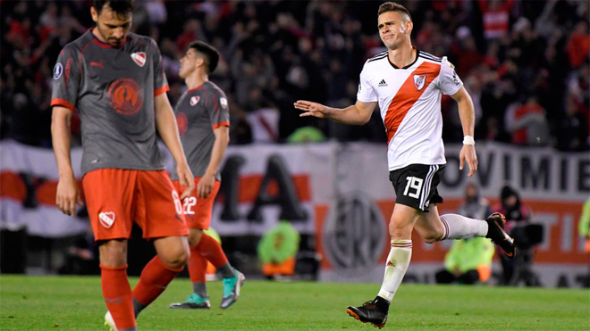
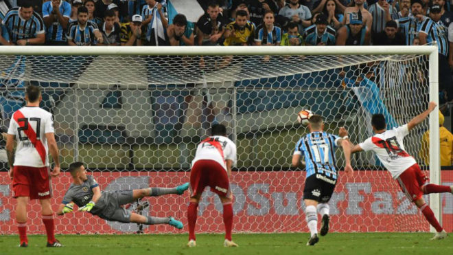

Se cumplen cinco años del 9 de diciembre de 2018. De la histórica final de la Copa Libertadores que el equipo de Marcelo Gallardo le ganó a Boca en el Santiago Bernabéu de Madrid.
River Plate debutó en el Grupo 4 de la Copa en Brasil con un 2-2 con Flamengo. Los goles fueron de Rodrigo Mora y Camilo Mayada. Luego vino un empate sin goles en el Monumental con Independiente Santa Fe y dos victorias ante el Emelec, la primera por 0-1 con un tanto de Javier Pinola y la segunda por 2-1 con goles de Pratto y Gonzalo 'el Pity' Martínez. El triunfo por 0-1 sobre Independiente Santa Fe, en Bogotá, con gol de Pratto, le aseguró un lugar en la siguiente instancia. En el cierre de la fase de grupos, River empató 0-0 con Flamengo en el Monumental.
| Posiciones | Equipos | Puntos |
| 1. | River | 12 |
| 2. | Flamengo | 10 |
| 3. | Santa Fe | 7 |
| 4. | Emelec | 1 |
En octavos de final goleó a Racing por 3-0 con goles de Exequiel Palacios, Rafael Borré y Pratto tras el empate 0-0 en la ida. En cuartos volvió a chocar con un argentino, Independiente, y nuevamente igualó 0-0 en la ida. En la vuelta se impuso por 3-1 con goles de Borré, Juan Fernando Quintero y De la Cruz.
En las semifinales, River pudo con Gremio después de que los brasileños asaltaran el Monumental con un tanto de Michel (0-1) y lograran sellar su pase a la final venciendo en Porto Alegre gracias al polémico tanto de Santos Borré y el penal convertido por 'Pity' Martínez pese a empezar por debajo tras el gol de Leo Gomes.
